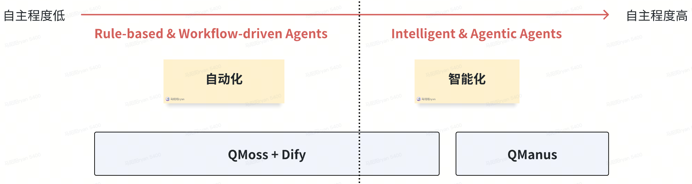
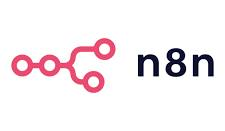
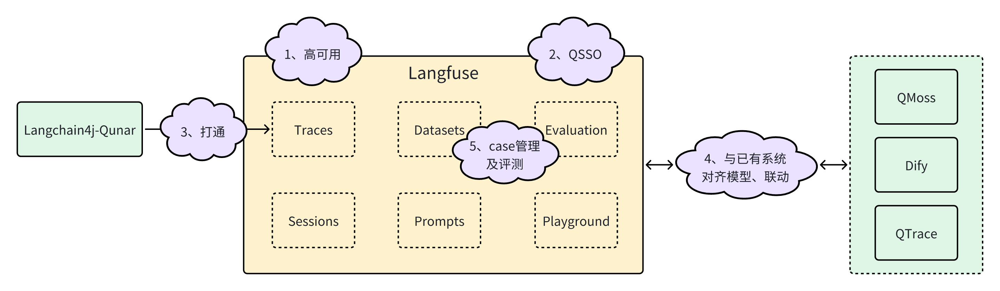
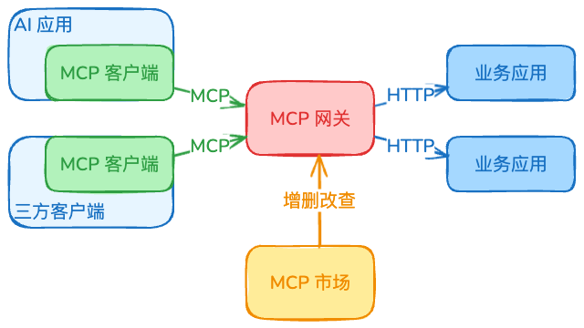
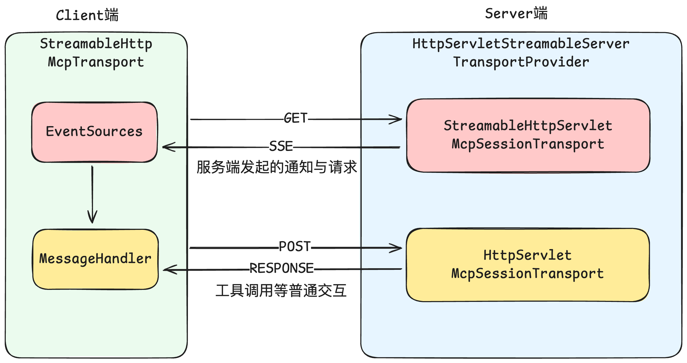
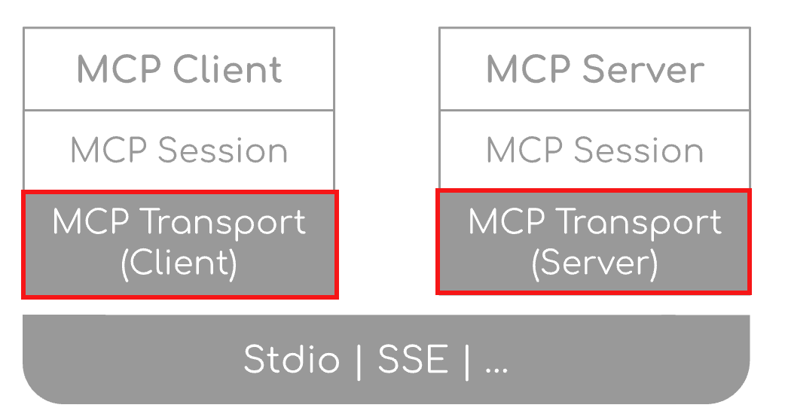
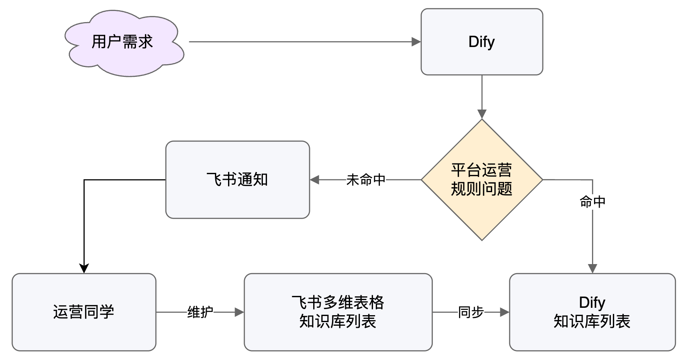

个人简介
马阳阳
去哪儿旅行 · 基础平台团队负责人
- 负责研发效率、质量类平台建设：自动化测试、测试环境管理、演练、压测、组件市场等
- 近年探索 AI Agent，主导公司级智能体平台 QMoss，规模化落地，带来万级 PD 提效
- ArchSubmit、QECon、SECon、A2M 等多届大会明星讲师

去哪儿旅行 · 基础平台团队负责人







开源方案很好用，但在企业级规模化落地时，往往需要围绕“稳定性 / 可运营 / 可治理”做体系补齐。








如何在已成熟的业务中，体系化落地？


